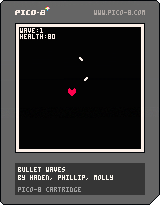

I am a senior at St. Mary's College of Maryland. I am majoring in computer science, with a minor in history. My goal is to develop video games. I first began learning to code more than a decade ago and found that I enjoyed it a lot. I like puzzles, and coding is essentially another type of puzzle.
In my free time, I enjoy playing video games. My favorite genres are mystery and puzzle games, city-builders, and adventure games. I also enjoy reading, both fiction and non-fiction.
This website is built using HTML and CSS. Its purpose is to give someone a general overview of who I am.
A simple, wave-based game where your only objective is to dodge the incoming projectiles. This game was made in PICO-8 using a slightly modified form of Lua. (Click on the image to download the game file)

Contact Me: EmailLinkedIn GitHub Download my resume